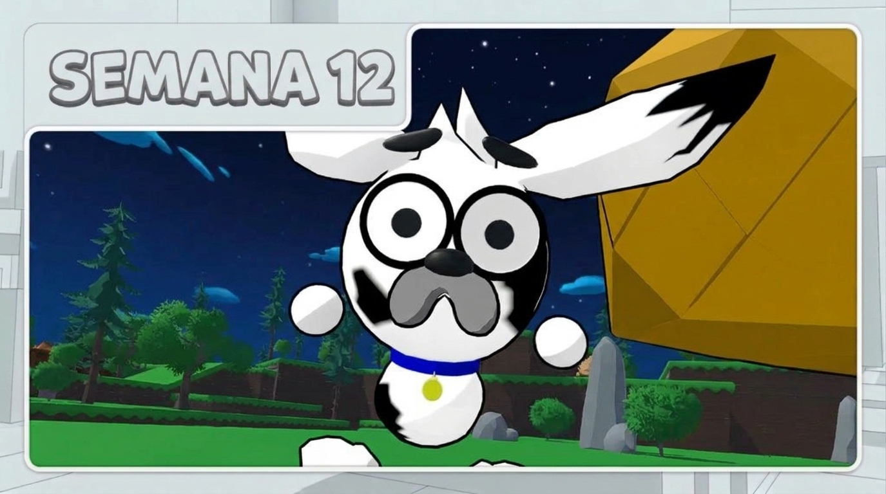

BITÁCORA DE DESARROLLO
Semana 12
Desarrollo de tótems y producción del teaser
Durante esta semana nos enfocamos en la implementación visual de los tótems y en la producción del teaser de Paw Team. Creamos los tótems de Lupe y Spike, desarrollamos una nueva animación exclusiva para el teaser y grabamos diferentes escenas para mostrar el juego y sus personajes.

¿Qué queríamos lograr?
El objetivo principal de esta semana fue avanzar en el teaser de Paw Team, preparando escenas que permitieran mostrar tanto la identidad visual del juego como algunas de sus acciones y mecánicas. Para ello, trabajamos en los tótems de los personajes y en diferentes animaciones que pudieran utilizarse durante la presentación.
También grabamos escenas específicas para el teaser, incluyendo la transformación de un nuevo personaje en Ferocan y una secuencia en la que varios Ferocanes persiguen a Lupe. Además, registramos el ataque de Spike dentro del gameplay para mostrar cómo se ve esta animación durante una partida.
Creación de los tótems
Durante esta semana creamos los tótems correspondientes a Lupe y Spike, dando a cada personaje su propio diseño para representar lo que ocurre cuando es eliminado durante la partida.
Estos tótems forman parte de la mecánica cooperativa del juego: cuando uno de los personajes es eliminado, su tótem permanece en el escenario y el otro jugador puede acercarse para revivirlo. De esta manera, la eliminación no significa necesariamente que la partida deba terminar, sino que se convierte en una situación en la que ambos jugadores deben colaborar.

Transformación en tótem dentro del juego
Después de trabajar en los diseños, preparamos una demostración de cómo se ve la transformación de los personajes dentro del juego. Cuando Lupe o Spike se quedan sin vida, se convierten en su tótem correspondiente, que queda en el escenario.
Este avance permite observar cómo se representa visualmente la mecánica durante el gameplay y cómo los tótems se integran con el entorno. Su función es permitir que el compañero que sigue activo pueda revivir al personaje eliminado y continuar la partida.
Creación de un personaje para el teaser
Creamos un nuevo personaje diseñado exclusivamente para el teaser. Este perro aparece al inicio del video y tiene un papel importante en la secuencia de apertura, por lo que se desarrolló como un elemento específico para esta presentación.
Su creación nos permitió preparar una escena propia para el teaser y contar con un personaje que protagonizara la transformación que se muestra al comienzo del video.

Escena de transformación en Ferocan
Para el inicio del teaser grabamos una escena en la que el nuevo perro se transforma en un Ferocan. Esta secuencia fue preparada específicamente para el video, con el propósito de mostrar una transformación y presentar una de las amenazas que existen dentro del mundo de Paw Team.
A diferencia de las grabaciones habituales de gameplay, esta escena se realizó pensando en la presentación del juego, buscando generar interés desde el comienzo del teaser y mostrar parte de su mundo y de las criaturas que lo habitan.
Animación de ataque de Spike en gameplay
También grabamos una secuencia de gameplay para mostrar cómo se ve la animación de ataque de Spike durante una partida. En esta toma se puede apreciar el movimiento del personaje mientras realiza su golpe dentro del escenario.
Esta grabación permite mostrar la animación en su contexto real de juego, complementando el trabajo realizado sobre Spike y ofreciendo una referencia visual de cómo se perciben sus acciones durante el combate.
Persecución de Lupe por varios Ferocanes
Para otra escena del teaser, grabamos una secuencia en la que varios Ferocanes persiguen a Lupe por el escenario. Utilizamos una cámara diferente para mostrar la persecución y darle una perspectiva distinta a la grabación.
Al igual que la transformación del perro en Ferocan, esta escena se creó específicamente para el teaser. Su propósito es mostrar una situación de peligro dentro del juego y transmitir mejor la tensión de encontrarse frente a varios enemigos.
Resultado de la semana
Esta semana avanzamos en la representación visual de la mecánica de los tótems y en la producción de escenas para el teaser. Combinamos elementos del gameplay con secuencias preparadas específicamente para presentar el mundo, los personajes y las amenazas de Paw Team.
¿Qué observamos o descubrimos?
Durante este proceso vimos que el teaser puede combinar escenas creadas específicamente para la presentación con grabaciones del juego en funcionamiento. Las escenas de transformación y persecución permiten mostrar situaciones narrativas y de peligro, mientras que el gameplay de Spike permite apreciar directamente una de las acciones del personaje.
También avanzamos en la representación de los tótems de Lupe y Spike, que son importantes para la cooperación entre los jugadores. Con estos elementos seguimos construyendo tanto las mecánicas del juego como los recursos visuales necesarios para presentarlo.
¿Qué cambiaremos en la siguiente versión?
- Continuaremos puliendo las mecánicas del juego y mejorando su funcionamiento durante las partidas.
- Seguiremos trabajando en la implementación y el funcionamiento de los tótems, especialmente en la interacción necesaria para revivir al compañero.
- Desarrollaremos y ajustaremos nuevas animaciones para el teaser, además de continuar preparando las escenas necesarias para presentar Paw Team.